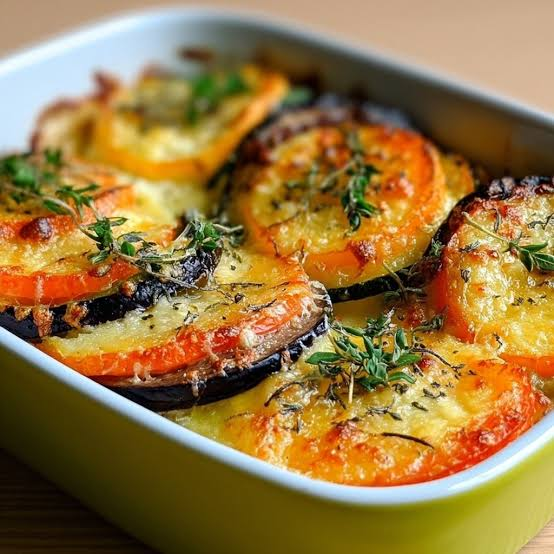

Gratin de legumes arc-en-ciel
Pages d'accueil

Description
Pour ce gratin de légumes arc-en-ciel, un trio de légumes racines est
disposé en couches
puis cuit au four afin de créer un accompagnement coloré digne des fêtes.
Les betteraves
peuvent déteindre de leur couleur rose intense sur les légumes voisins ;
veillez donc à
séparer les panais pour éviter qu’ils ne deviennent violets.
Ingrédient
- 3 betteraves rouges moyennes , pelées
- 2 patates douces moyennes , pelées
- 1 gros panais , pelé
- 1 cuillère à soupe de beurre non salé
- 1 échalote , émincée
- 3 gousses d' ail hachées
- 3 brins de thym frais , plus quelques brins pour la garniture
- 2 brins de romarin frais
- 1 1/4 tasse de crème épaisse
- 1/2 cuillère à café de sel
- 1/2 cuillère à café de poivre noir moulu
- 1 tasse de gruyère râpé , divisée
- 1/2 tasse de parmesan râpé , divisée
- 1/4 tasse de chapelure panko
- 1 cuillère à soupe de persil frais haché
- 1 cuillère à soupe de beurre non salé fondu